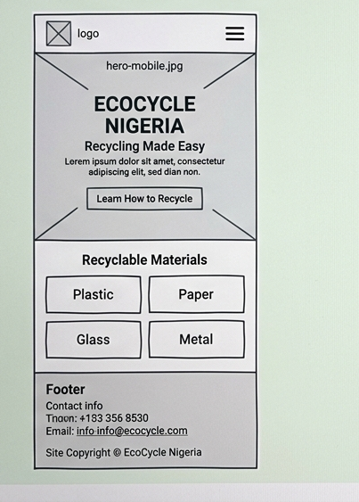
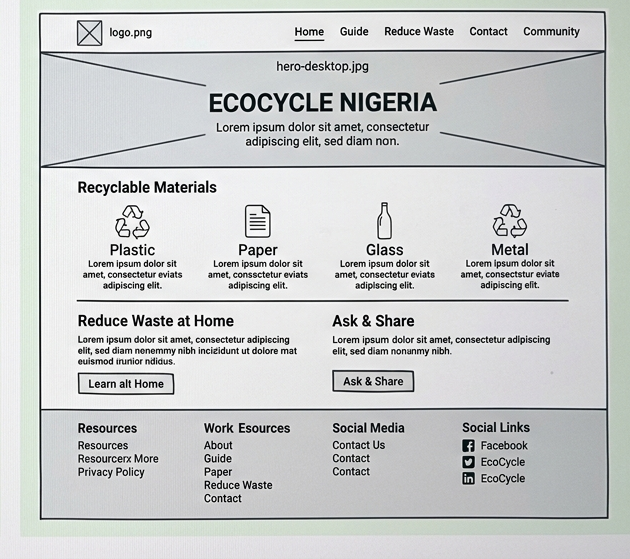

RecycleNG - Website Planning Document
WDD 131 | Dynamic Web Fundamentals
1. Site Name
RecycleNG
I chose the name RecycleNG because it is short and easy to remember. “Recycle” shows the main topic and “NG” stands for Nigeria. This name helps people quickly understand that the website is about recycling in Nigeria.
2. Site Purpose
The purpose of this website is to teach people in Nigeria about recycling and proper waste management. It will explain different recyclable materials (plastic, paper, glass, and metal) and give simple tips on how to sort and reduce waste. Visitors can also ask questions or share their experiences.
3. Scenarios
These are questions that visitors might ask:
- How do I properly sort plastic bottles and bags for recycling?
- What paper, glass, or metal items can I recycle at home?
- Where can I ask a question or share my recycling experience?
4. Color Scheme
I chose green colors because they represent nature and the environment.
#1B5E20
Primary Green
Headings and logo
#4CAF50
Secondary Green
Borders and highlights
#F5F5F5
Light Background
Page background
#0D3B12
Dark Green
Footer text
5. Typography
I selected two simple fonts:
- Montserrat - used for all headings (h1, h2, h3)
- Open Sans - used for body text and paragraphs
6. Wireframes - Home Page
Mobile View

Desktop View
